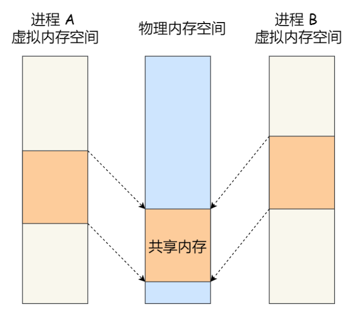

管道
系统调用int pipe(int fd[2])
该调用创建的是一个匿名管道，参数是一个文件描述符数组，fd[0]是读端描述符，fd[1]是写端描述符。虽然用了文件描述符，但匿名管道存在于内存中，是内核里面的一串缓存。
管道用于进程间通信是利用了fork()创建的子进程会复制父进程的文件描述符，所以管道读写两端的文件描述符在父子进程中都存在，通过在同一个管道中写入或读取就可以实现通信
管道中读取数据是一次性操作，数据一旦被读走就从管道中被抛弃
管道是半双工的，但父子进程可能同时写入或同时读出，为了避免混乱，通常：
- 父进程关闭
fd[0] - 子进程关闭
fd[1]
如果要求双向通信，需要创建两个管道。
对于匿名管道，通信的范围是存在父子关系的进程，因为匿名管道没有实体，只能通过fork共享文件描述符，达到通信的目的。
对于命名管道，可以在不相关的进程间进行通信，系统调用为int mknod(const char *pathname, mode_t mode, dev_t dev);创建了一个类型为管道的设备文件，在进程中只要使用这个设备文件就可以相互通信。
缺点：
- 管道是内核态的资源，访问时需要进行上下文切换，开销较大
- 管道的工作方式：进程A将缓冲区写满后会阻塞，等到数据被读完之后才会退出，通信效率较低；读缓冲区为空时也会阻塞
消息队列
消息队列是保存在内核中的消息列表
与管道的区别：
- 使用方式不同，进程A向消息队列写入数据后，直接正常返回，进程B等需要的时候再去读取数据。
- 发送数据方式不同，数据会被分为一个个独立的消息体，消息体是用户自定义的、发送方和接收方约定好的数据类型，所以每个消息体都是固定大小的存储块。而管道是无格式的字节流数据。
- 生命周期不同，消息队列的生命周期与内核相同，如果没有释放消息队列或者关闭OS，消息队列会一直存在。
缺点：
- 通信不及时
- 消息队列和消息体都是有长度限制的（Linux内核中
MSGMNB和MSGMAX宏定义），所以不适合比较大的数据的传输 - 消息队列依然是内核态资源，写入和读取都会发生上下文切换，两个空间之间拷贝数据的过程
共享内存
进程拥有自己独立的虚拟内存地址空间，访问的虚拟内存地址通过地址映射得到物理内存地址。如果两个进程各自有一块虚拟地址空间，映射后的物理地址是相同的，那么就可以实现进程间的通信。

source:小林coding
这种方式的进程通信，避免了上下文切换和数据的拷贝，提高了通信效率。
但是出现多进程竞争共享资源的问题
信号量
信号量是一种保护机制，用于实现进程间的互斥与同步，并不直接用于进程间通信数据的传输。
信号量的控制方式有两种原子操作：
- P操作：信号量-1，如果操作后<0，阻塞进程
- V操作：信号量+1，如果操作后<=0，说明当前有被阻塞进程，将其唤醒
如果信号量初值为1，则其为互斥信号量，保证了每个时刻只有一个进程在访问共享资源，这时进程访问贡献资源前执行P，访问结束后执行V。
如果信号量初值为0，则其为同步信号量，需要先执行的进程，执行完之后进行V操作；后执行的进程，执行前进行P操作。
信号
信号是进程间通信在异常情况下的工作模式
信号来源：
- 对于前台进程，用户可以通过输入特殊终端字符发送信号（e.g. Ctrl+c）
- 硬件发生异常，检测到错误条件通知内核，内核随即发送相应信号给相关进程
- 系统状态变换，比如
alarm定时器到期会引起SIGALRM信号 - 运行kill命令或调用kill函数
使用信号的目的：
- 让进程知道已经发生了一个特定的事件
- 强迫进程执行它自己代码中的信号处理程序
信号是进程间通信机制中唯一的异步通信机制，可以在任何时候发送信号给某一进程，一旦有信号产生，用户进程对信号的处理方式有如下几种：
- 执行默认操作
- 捕捉信号
- 忽略信号
默认处理动作(man 7 signal)：
- Term终止进程
- Ign忽略信号
- Core终止进程，产生Core文件
- Stop暂停进程
- Cont继续执行被暂停的进程
Socket
Socket能够在同主机不同进程之间，或不同主机的进程之间通信
使用socket在本主机不同进程间通信时，domain参数应该设置为PF_UNIX
bind绑定的地址应该是sockaddr_un类型
创建本地通信socket部分代码：
1 | //server |